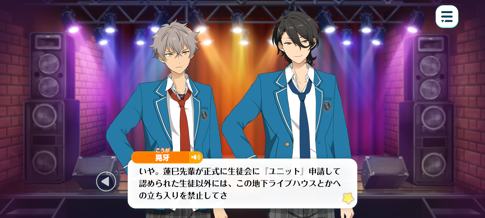
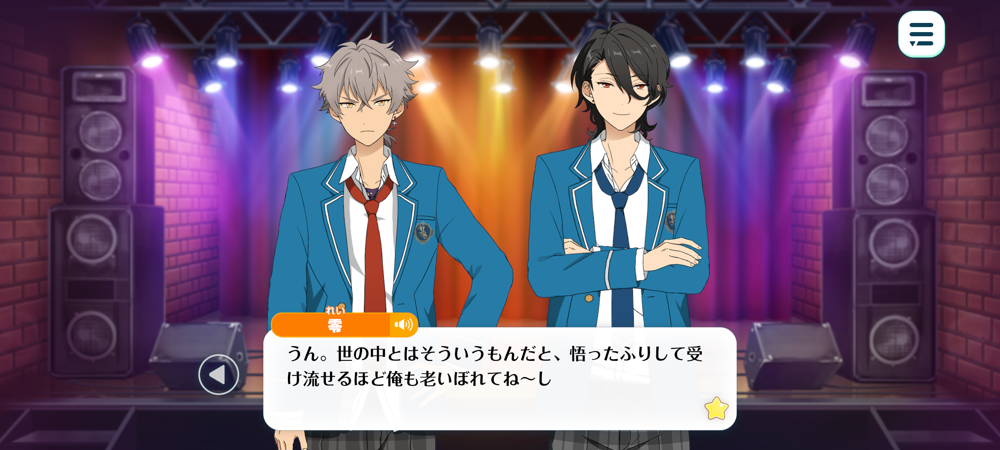
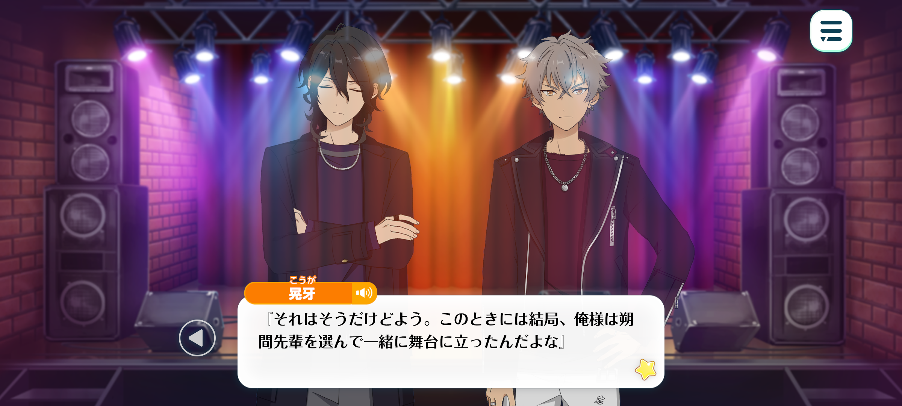

PSYCHOBREAK — Chapter 8



Rei: Well, whatever. If there’s nothin’ we can do, are we just gonna leave the vampires alone then?
Koga: No. Hasumi-senpai has banned anyone from enterin’ this livehouse if they haven’t formally registered with and been approved by the Student Council.
Didn’t get all the details but, if you break the rules, you’re gonna get punished.
But the vampires are just gonna ignore that ‘n keep on causin’ havoc.
Hasumi-senpai was sayin’ something about setting up a DreFes so we can put an end to those guys once ‘n for all.
That’s why I’m out here practicin’.
Rei: A Drefes… Like a live showdown? Judgin’ by how the system works, I wouldn't exactly say it's dream-like.
Koga: Even if the DreFes takes place ‘n we win, what the hell happens next?
Are the rotted idols at our school gonna suddenly have a moment of introspection and go “from this point forward, I’m going to take my idol activities very seriously!”?
Rei: They won't. A rotten corpse can never become a living person again.
But. The DreFes is part of school regulations. From what I’ve seen, rules say that if they keep losin’ they’ll be disqualified from being idols.
Their results will keep getting worse, and eventually they'll be suspended or expelled on the grounds that they're no longer fit to be students at Yumenosaki.
Bouzu’s just tryna find an excuse to exile the delinquents, or “vampires” from school.
Koga: Nn, that’s still kinda a roundabout way of doin’ things… Can’t he just use the very fact that they are delinquents to kick ‘em out? That’s bad enough on its own.
Not much point in him going out of his way t’set up a live.
Rei: A high proportion of Yumenosaki students, especially those on the idol course, come from respectable families. That includes yours truly.
That’s why the school’s been turnin’ a blind eye to all their misconduct.
These students are like a vital source of nutrients for struggling Yumenosaki. Doesn’t help that the entire industry is entering a slump as well. In other words, they’re cash cows.
No matter how irritatin’ and rowdy they are, it’s not as simple as just kickin’ them out.
That’s Yumenosaki’s fatal flaw. No matter how sick ‘n how painful things get, it’s not as simple as just removin’ the defective organ.
On the flip side, the school’s been desperately tryna cover up any student scandals and protect them from repercussions.
That’s why the “vampires” are still out here, enjoyin’ their youth, without a single fuck to give. Pretty revolting story, right?
Koga: That’s so shitty… So having money makes you important? Adults always say it does.
Is money more important than justice? There’s people out there who have been brought t’tears ‘cos of those delinquents! People are suffering even though they haven’t done anything wrong!
Why should the people doing bad things get to point and laugh, whilst the people doing good things are made to cry?
It’s messed up, Sakuma-senpai.

Rei: Yeah. I'm not so old and decrepit that I can just pretend I've accepted that this is how the world works and let it slide.
So, if I can, I wanna help Bouzu to get rid of these delinquents like he’s planned.
Koga: Th-then, you’ve got to perform too! If Sakuma-senpai is on our side, we’ll have the strength of a hundred people!
Let’s crush them! Let’s defeat the delinquents with our music!
Rei: Hm~... I'm a sucker when someone asks me like that.
Ahaha. I don’t think there’s a fix for this sort of thing…maybe I’ve got an incurable disease.
Koga: Y-you’re sick Sakuma-senpai? Then don’t force yourself t’do anythin’...?
Rei: Don’t worry, it’s more of a mental thing.
Right then. Take me t’where Bouzu is, so I can help him out.
I’ll stand on stage.
Koga: Hah! Fuck yes~! If you’re on our side, we won’t lose to anyone ♪
Rei: But. I’m not the type t’break my promises, so I can’t be on the same side as Bouzu. I crushed him at the Deadmanz live, after all.
So I’m not gonna take the stage on his side. Even if I do perform, it'll have to be as part of a different unit. That’s my one condition.
So. If you’re gonna stand on the stage, you gotta pick. Me or him, Oogami Koga-kun.
Koga: That’s, I’m… This ain’t the time to be stubborn. We should band together so we can defeat those delinquents ‘n then—
Rei: Nope~, no can do. Life’s not that simple. I never break my promises. Not ever again.
A promise was made. And he lost.
We’ve said our goodbyes. Our paths will never cross again. He and I will never stand on the same stage again, with the same goals in mind.
Koga: …

Rei: (And yet, we did end up standing on stage together! On quite a few occasions, in fact! Forgive me, past self, for being such an arrogant fool...!)
Koga: (Yeah. And in the end, I chose t’stand by your side, Sakuma-senpai.)
Rei: (It seems Hasumi-kun was the one who relented. He's a serious fellow, after all, and he said he couldn't go back on his word—)
(He explained that, having already formed a new unit, AKATSUKI, he was bound by the rules and couldn't belong to more than one unit at a time.)
(In the end, Hasumi-kun took on a supporting role, working behind the scenes whilst we took to the front lines to drive out the delinquents.)